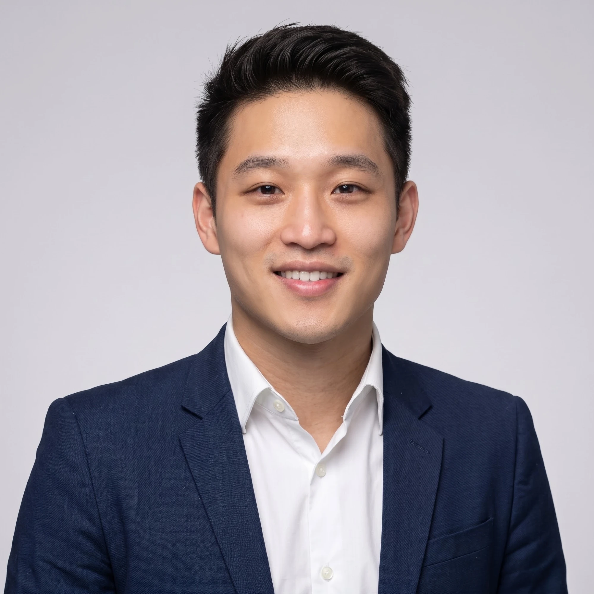
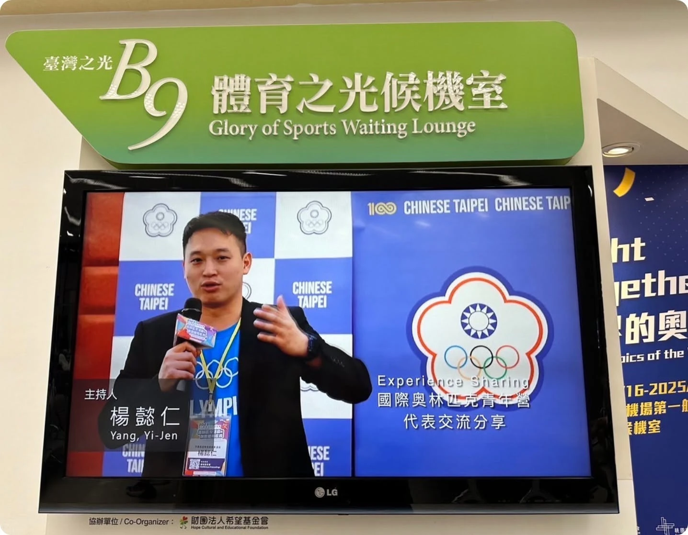

Yi-Jen (Ian) Yang
Ph.D. Student, Graduate Fellow and Graduate Assistant
Department of Sport Management, University of Florida
I study how mega sport events such as the LA28 Olympic and Paralympic Games affect the communities that host them and residents' quality of life, how sport participation and physical activity relate to health and well-being, and how accurately wearable technology measures exercise intensity.
Before coming to Florida, I taught for six years at National Pingtung University of Science and Technology in Taiwan, led research grants from the National Science and Technology Council and the Ministry of Education, and served the Chinese Taipei Olympic Committee as a member of its Education Committee and as an advisor to its International Sports Affairs Training Program.
News
| Nov 2026 | Discussed officiating technology and LA28 host-community research with LA28's Gustavo Costa at the UF Business of Sport Symposium. |
| Oct 2026 | Guest lecture on mega-event legacy at North Carolina State University. |
| Oct 2026 | Article on physical literacy and sports team participation published in BMC Public Health. |
| Aug 2026 | Started the Ph.D. in Sport Management at the University of Florida with a Graduate School Opportunity Award. |
| Jul 2026 | Visited the IOC Olympic Studies Centre in Lausanne and was invited to join the International Olympic Academic Community. |
| Jul 2026 | Presented a poster on immersive VR sports spectating at the European College of Sport Science Congress in Lausanne. |
| Jul 2026 | Presented a poster on motivation for continued VR sports viewing at the International Self-Determination Theory Conference in Geneva. |
| Feb 2025 | Completed Fulbright Taiwan EMI faculty training at Teachers College, Columbia University. |
Research
Mega-event legacy and Olympic studies
Resident quality of life, social capital and resilience in LA28 host communities; Olympic Agenda 2020 and Olympic education.
Sport, physical activity and health
Physical literacy, sport participation and regular physical activity among university students; physical activity and mental health.
Wearable technology
How accurately wrist-worn devices classify exercise intensity, and how students and teachers adopt sports technology in physical education.
Methods: survey design and analysis, regression modeling, structural equation modeling, confirmatory factor analysis; R, SPSS, AMOS, SmartPLS.
Selected publications
- Huang, C.-C., Cheng, Z.-Y., Wang, H.-Y., Yang, Y.-J., Lin, L.-H., Chung, F.-I., & Hsu, C.-T. (2026). Perceived physical literacy, sports team participation, and regular physical activity among university students: A national survey study. BMC Public Health. Advance online publication. doi:10.1186/s12889-026-28535-2
- Yang, Y.-J., & Cheng, C.-C. (2023). The perception of Olympic Agenda 2020 recommendations of college student athletes in Taiwan: A cross-sectional study on the implementation of the Agenda in 2021. Diagoras: International Academic Journal on Olympic Studies, 7, 47–61.
- Ho, W.-T., Yang, Y.-J., & Li, T.-C. (2022). Accuracy of wrist-worn wearable devices for determining exercise intensity. Digital Health, 8, 20552076221124393. doi:10.1177/20552076221124393
Ten further articles in Chinese-language journals (2020–2023), including Taiwan Journal of Sports Scholarly Research and School Physical Education, are listed in the CV and on Google Scholar.
Recent presentations
- Yang, Y.-J. (2026). The shift in fan spectating modes: Analyzing immersive virtual reality sports spectating behavior through TAM and TPB. European College of Sport Science (ECSS) Congress, Lausanne.
- Yang, Y.-J. (2026). Psychological need satisfaction and motivation toward continued VR sports viewing among Taiwanese university students. International Self-Determination Theory Conference, Geneva.
- Yang, Y.-J. (2024). Sports tech in Taiwan's PE curriculum: Technology Acceptance Model and physical fitness assessment. International Congress of Psychology, Prague.
- Yang, Y.-J. (2023). The perception of Olympic Agenda 2020 recommendations of college student athletes in Taiwan. ECSS Congress, Paris.
Research grants
| 2025–2026 | Principal investigator, The shift in fan spectating modes in the era of digital technology. National Science and Technology Council, Taiwan (NSTC 114-2410-H-020-016). |
| 2024–2025 | Principal investigator, Rain in the heart? Mental health leave and physical education: A teaching practice study. Ministry of Education Teaching Practice Research Program (PGE1137013). |
| 2023–2024 | Principal investigator, A good attitude: Integrating adapted physical education values into general PE. Ministry of Education Teaching Practice Research Program (PGE1122599). |
| 2022–2023 | Principal investigator, Introducing sports technology and diverse pedagogy into physical education courses. Ministry of Education Teaching Practice Research Program (PGE1110231). |
Selected honors
| 2026 | Graduate School Opportunity Award, University of Florida |
| 2025 | Selected participant, Fulbright Taiwan–Ministry of Education EMI Overseas Professional Training Program |
| 2020–2025 | Outstanding Teacher in Innovative Teaching, NPUST (five consecutive years) |
| 2023 | Outstanding-coach citation, Ministry of Education, Taiwan |
| 2018 | Winning Paper Award, Wu Ching-Kuo Scholarship paper competition, University of Taipei |
| 2017 | Certificate of Excellence (best presentation), Asian Association for Sport Management Conference |
| 2017 | Outstanding Poster Award, International Conference on Women and Sport (APEC Sports Policy Network) |
| 2014 | International Youth Ambassador, Ministry of Foreign Affairs, Taiwan |
Teaching
| 2020–2026 | National Pingtung University of Science and Technology, Physical Education Office. Assistant Professor (2025–2026) and lecturer (2020–2025). Sport science, adapted physical education, judo, swimming, and English-medium physical education courses. Outstanding Teacher in Innovative Teaching, five consecutive years. |
| 2025 | Fulbright Taiwan–Ministry of Education EMI faculty training, Teachers College, Columbia University. |
| 2022–2025 | National Sports Training Center, Taiwan. Course instructor for national-team athletes: sports coaching, teaching strategies, and training methods. |
| 2019–2020 | National Taiwan Normal University. Adjunct lecturer, general physical education. Course introduction video (NTNU PE). I also post short judo technique videos on my YouTube channel; the most viewed has over 11,000 views. |
| 2015–2016 | Saint Lucia, Department of Youth Development and Sports. Physical education teacher. |
Talks and presentations
Invited talks
| 2026 | Guest lecture on mega-event legacy, global sport course, North Carolina State University. |
| 2025 | Invited speaker, International Bilingual Education Forum, Fulbright Taiwan, Kaohsiung. |
| 2025 | Guest lecturer, Olympic Education and English Proficiency, National Taiwan University of Sport. |
| 2023 | Presenter, Olympic Council of Asia Athletes Forum: Olympic sport development in Chinese Taipei and the Taiwan Youth Olympic Experience Camp. |
| 2022 | International sport trends and international sports affairs, Department of Physical Education and Sport Sciences, National Taiwan Normal University. |
| 2021 | Online talk, “Student life around the world,” Tokyo University of Science, Japan. |
| 2020 | Panelist (in English), Seminar on Youth Leadership in the Post-COVID-19 Era, Ministry of Foreign Affairs, Taipei: the role of sport and physical activity during the pandemic. |
All conference presentations (14)
- Yang, Y.-J. (2026, October). Results of the NSTC project on fan spectating modes in the era of digital technology. E-poster, NSTC Physical Education Research Results Joint Presentation, National Cheng Kung University, Tainan.
- Yang, Y.-J. (2026, July). The shift in fan spectating modes: Analyzing immersive virtual reality sports spectating behavior through TAM and TPB. Poster, 31st European College of Sport Science Congress, Lausanne, Switzerland.
- Yang, Y.-J. (2026, July). Psychological need satisfaction and motivation toward continued VR sports viewing among Taiwanese university students. Poster, 9th International Self-Determination Theory Conference, Geneva, Switzerland.
- Yang, Y.-J. (2025, August). Rain in the heart? Mental health leave and physical education. MOE Teaching Practice Research results exchange meeting, Taiwan.
- Yang, Y.-J. (2024, August). A good attitude: Integrating adapted physical education values into general PE. MOE Teaching Practice Research results exchange meeting, Taiwan.
- Yang, Y.-J. (2024, July). Sports tech in Taiwan's PE curriculum: Technology Acceptance Model and physical fitness assessment. Oral presentation, 33rd International Congress of Psychology, Prague, Czech Republic.
- Yang, Y.-J., & Cheng, C.-C. (2023, August). A research of Japan ski tourism diversification: Hakuba Valley as a case study. Poster, 19th Asian Association for Sport Management Conference, Kuching, Malaysia.
- Yang, Y.-J. (2023, August). Introducing sports technology and diverse pedagogy into physical education courses. MOE Teaching Practice Research results exchange meeting, Taiwan.
- Yang, Y.-J. (2023, July). The perception of Olympic Agenda 2020 recommendations of college student athletes in Taiwan. Oral presentation, 28th European College of Sport Science Congress, Paris, France.
- Wang, Y., Hsu, Y.-C., & Yang, Y.-J. (2023, May). Young consumers' personal traits and intention to purchase medical aesthetic services. Oral presentation, 24th Conference on Sustainable Development Management, NPUST, Taiwan.
- Yang, Y.-J. (2021, May). Student-athletes' policy awareness of Olympic Agenda 2020+5 reform issues in the post-pandemic era. Poster, Taiwan Society for Sport Management Annual Conference (online).
- Yang, Y.-J. (2018, June). Taiwanese student-athletes' awareness of Olympic Agenda 2020 reform. University of Taipei Leisure Sport Academic Conference, Taipei. Winning Paper Award.
- Yang, Y.-J. (2017, October). Gender equality awareness among male and female student-athletes in Taiwan. Poster, International Conference on Women and Sport (APEC Sports Policy Network), Taipei. Outstanding Poster Award.
- Yang, Y.-J., & Chen, M.-Y. (2017, July). The perception of Olympic Agenda 2020 recommendations of college student athletes in Taiwan. Oral presentation, 13th Asian Association for Sport Management Conference, PyeongChang, South Korea. Certificate of Excellence.
Service and the Olympic movement
Chinese Taipei Olympic Committee
- Member, Education Committee (2022–2025).
- Co-founded and directed the Taiwan Youth Olympic Experience Camp: four camps from 2022 to 2024.
- Advisor, International Sports Affairs Training Program (2023–2024); group mentor at its training camp (2022–2025) and course lecturer (2024).
- Delegation secretary to the CTOC President, delegation to the International Olympic Academy for the signing of a memorandum of understanding, Greece (2023).
International Olympic Academy, Ancient Olympia
- Nominated by the CTOC to the 14th International Session for Educators of Higher Institutes of Physical Education (2023).
- Nominated by the CTOC to the 59th International Session for Young Participants (2019).
Editorial and review
- Editor (2020–2024) and Executive Editor (2024–2026), Journal of NPUST Physical Education.
- Editorial board member, Journal of Leisure, Tourism and Sports Health (2023–2025).
- Reviewer: Journal of Sport Management (Taiwan), Sports Coaching Science, NTU Journal of Physical Education, Journal of Leisure, Tourism and Sports Health; evaluator, Taiwan Society of Sports Biomechanics conference (2024).
Government, university and community
- Evaluator and overseas mentor, Taiwan Global Pathfinders Initiative, Youth Development Administration, Ministry of Education (2025–2026).
- International Youth Ambassador, Ministry of Foreign Affairs, Taiwan (2014).
- Head, Facilities and Equipment Division, Physical Education Office, NPUST (2022–2024, 2025–2026).
Coaching and officiating
- Varsity coach of taekwondo, judo, wrestling, karate, basketball and swimming at NPUST (2020–2026); teams won 4 gold, 2 silver and 2 bronze medals at the 2024 National Intercollegiate Athletic Games.
- Assistant coach, NTNU varsity judo team (2016–2020).
- A-level judo referee and licensed judo coach, Chinese Taipei Judo Federation; referee at national competitions, including the National Games, the National Chung-Cheng Cup and the National Judo Championships, and at city and county competitions. Judo 4th Dan black belt.
- Judo broadcast commentator for national championships; ran free online judo-viewing workshops during the Tokyo 2020 Olympic Games.
From athlete to scholar
I am the first in my family to go to college, and I grew up on the judo mat. As an athlete I placed third in Asia and became a national champion, and I still hold a 4th Dan black belt and work as a referee and broadcast commentator at national competitions. Sport took me to National Taiwan Normal University to train as a physical education teacher, and then to Saint Lucia, where I spent a year teaching physical education.
Back in Taiwan I worked with the Chinese Taipei Olympic Committee on Olympic education, studied at the International Olympic Academy in Ancient Olympia, and spent six years at National Pingtung University of Science and Technology teaching, coaching varsity teams and leading teaching and research grants. Along the way, sport, study and service took me to more than 35 countries and regions, from a refugee camp in Jordan on a Ministry of Foreign Affairs youth ambassador tour to the Rio 2016 Olympic Games.
Again and again, I saw sport change a person, a school and sometimes a whole community. That left me with a question: how exactly do sport and physical activity make people's lives better, and how can we measure it well? I came to the University of Florida in 2026 to pursue a Ph.D. in sport management and answer that question through research, so that more people can live healthier, better lives through sport.
Around the world
Places where I have competed, studied, taught, presented research, made academic visits and worked in the Olympic movement. Click a dot for details.
In photos





Media
Curriculum vitae
Download the full CV (PDF), with all publications, presentations, grants, awards and service.